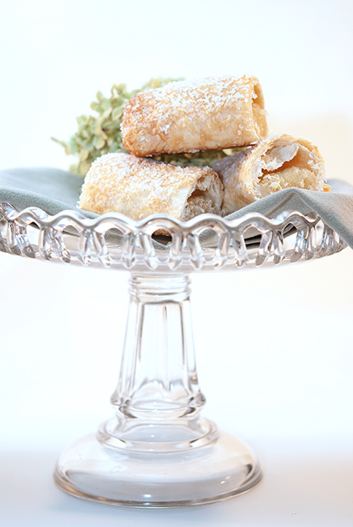

Banket Recipe
My family makes banket often, and so I thought it would be a great thing to share! it is a delicious pastry that is not difficult to make.
Ingredients
- 2 cups all-purpose flour
- 1 cup cold butter
- 1/2 cup water
- 1 1/2 cups almond paste
- 2 large eggs
- 3/4 cup white sugar, plus more for sprinkling
- 1/4 teaspoon almond extract
- 1 pinch salt
- 1 egg white, beaten
Instructions
- step 1: preheat oven to 450 degrees F, place flour into bowl, add cold butter and mix until crumb like texture.
- step 2: make well in the center, add cold water, mix together until dough forms.
- step 3: chill dough.
- step 4: blend almond paste, eggs, sugar, almond extract, and salt together.
- step 5: divide dough into 4 equal pieces, roll into 15 inch strips. place filling along center and roll up and pinch ends.
- step 6: place on greased cookie sheet, brush with egg white, and sprinkle with sugar.
- step 7: bake in oven for 15 to 20 minutes, or until golden brown.